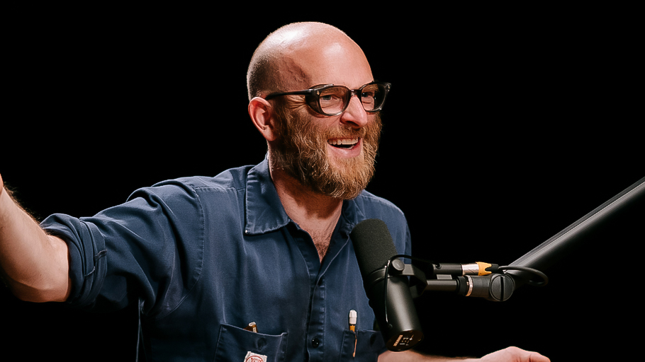

The Masters
I saw a potent quote once, I failed to write it down but it was something to do with finding your own masters:
While the world is big and filled with such remarkability, I feel it's best for my own brain that I organize those people who inspire me. Not only does it make it easy for me to reference these things, but hopefully while writing about these people I will also gain a better understanding of them and what it is that makes them so excellent.
Van Niestat
